Projects
Games, design and animation.
16 projects from 2023 to 2026, grouped by discipline. Jump to a section with the bar above, or pick a project below.
Games
Games
Playable builds, jam games and narrative projects — across programming, assets and writing.
01 — Team Lead · Delivery Sim
The King’s Messenger
A delivery-simulation side-scroller set across five villages. As head developer I led a team of three developers and three artists through a full production cycle, from first prototype to a released build for Windows and macOS.


02 — Game · Asset Creation
What Waits in the Cave
A game project where my contribution was mostly asset creation: building the art and assets that fill out the game’s world.


03 — Game · Writing
Selkie’s Tail
A game where the writing leads. I wrote the story and text that carry the experience.


04 — Game · Interactive Fiction
Twine Project
A playable interactive fiction built in Twine from my own writing, turning a written piece into something players move through by making choices.


05 — Solo · VR Horror
Darker
A psychological horror experience built for VR. Players take on the role of Adrian Hale, exploring the abandoned Chamber Six of the Veyla Institute — only to discover they aren’t the original Adrian at all, but a manufactured consciousness trapped in an experimental loop. As the sole developer over a 13-week capstone, I built every system: a phase-managed state machine, VR interaction and raycast pickup, dynamic lighting with a battery-managed flashlight, a render-texture security-camera puzzle, and a dual-ending choice system. This was my first project in both Unreal Engine and VR.
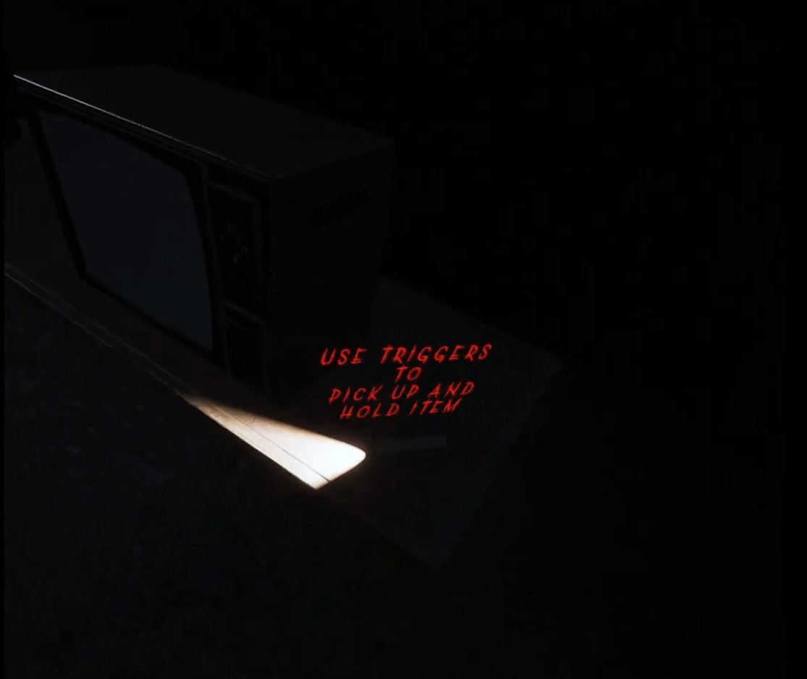

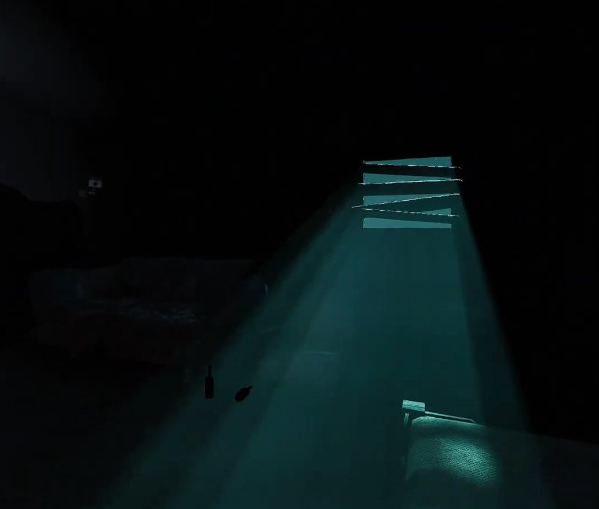
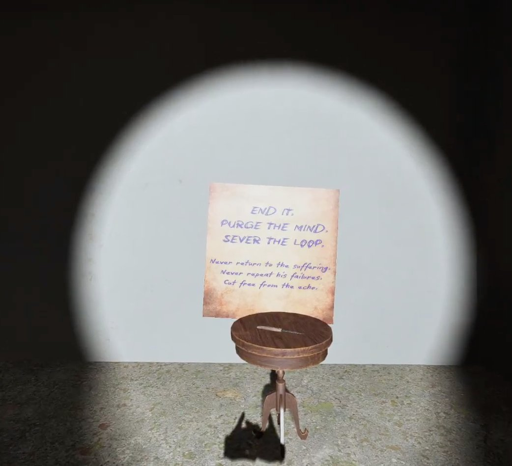
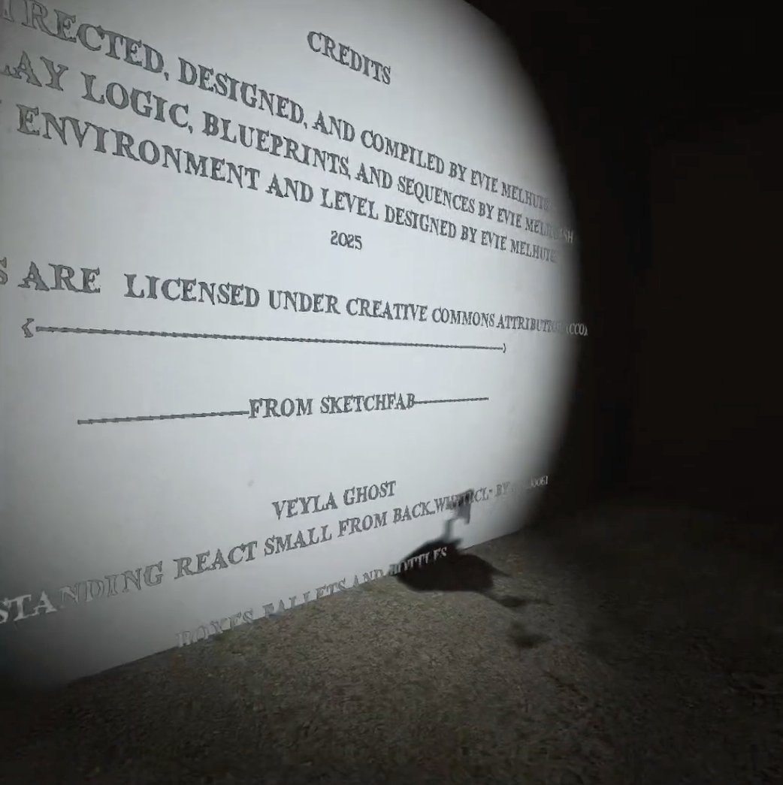
06 — Playable · Game Jam
Bubble Boundaries
A 2D puzzle-platformer where players use a bubble gun to create temporary platforms — crossing gaps, blocking enemy projectiles, and climbing increasingly complex vertical levels before each bubble pops. As team lead and co-developer, I built the player movement, bubble-gun mechanics with ammo management, UI, and level progression framework.
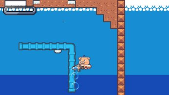
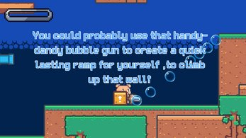
07 — Playable · Group Project
RetroChicken
A 2D breeding simulation where players breed chickens backwards into microraptors to redeem a disgraced biologist’s career — inspired by Stardew Valley’s visuals and Wobbledogs’ genetics system. As primary programmer and artist I built the pathfinding, hunger system, breeding menu, and every genetic trait sprite; the hardest part was a collision-based feeding system solved entirely within the chicken class, with no globals.
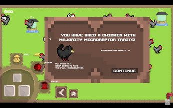
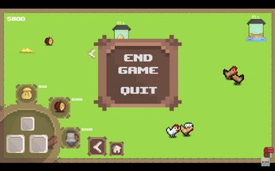
08 — First Project · Introductory Programming
Elemental Expedition
A 2D co-op platformer inspired by Fireboy and Watergirl: two characters with elemental abilities — fire and water — navigate dark, obstacle-filled levels that each character interacts with differently. My introduction to game development, and the project that taught me collision detection hides far more complexity than it looks like from the outside. All sprites, tiles, and UI were designed and drawn by me.
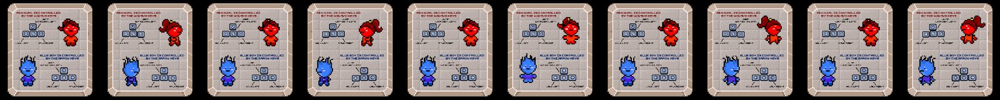
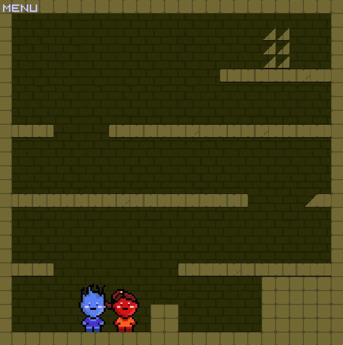
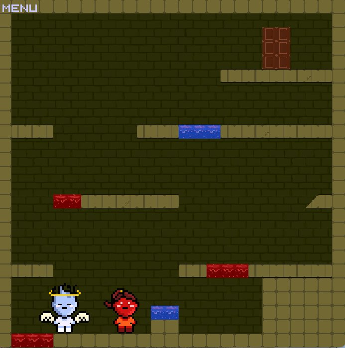
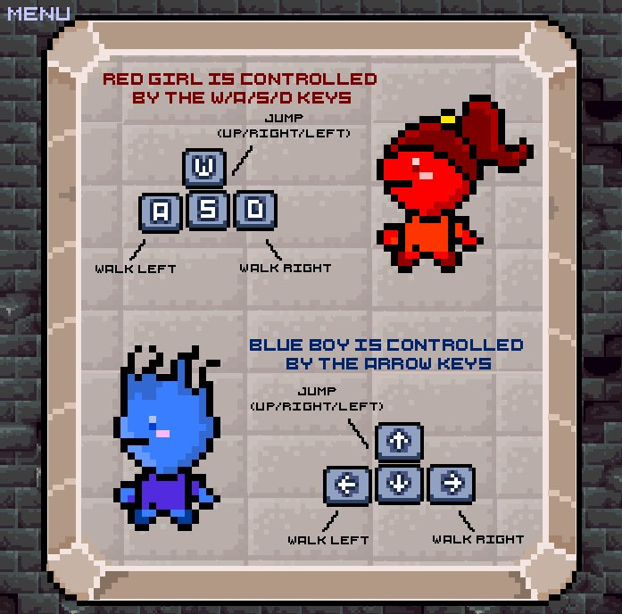
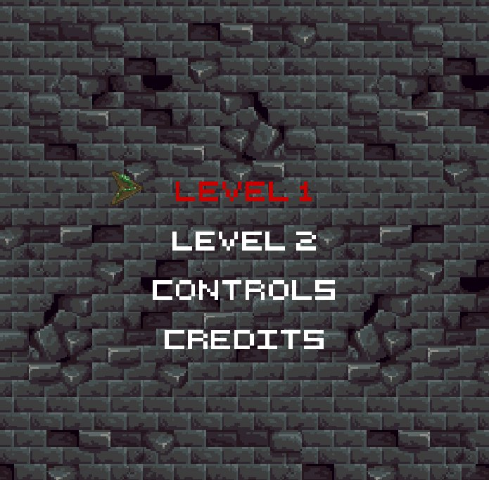
Design
Design
Digital and UI design, research, worldbuilding and tabletop design.
01 — Capstone · Co-op Game
We Have A Problem
A two-player co-op sci-fi escape game. One player runs the ship’s console while the other uses the manual to match cryptic system reports to the right repair instructions. It’s a game, but my part of this capstone was mostly digital design.


02 — Research · Worldbuilding
A World Designed: Soma
A research and writing project to create a world from scratch, along with the logic that governs it: how it works, why it holds together, and what that means for the people living in it.


03 — Art Contribution
Isles
Artwork I made for Isles, a project led by someone else.


04 — Research · Game Design
Tabletop Game Proposal
Research and design for a tabletop game, brought together in a proposal.


Animation
Animation
3D character work and animation, from concept through rig to final render.
01 — 3D Art · Rigging · Animation
Sky Kid
Inspired by Sky: Children of the Light, a fully modeled, rigged, and animated character taken from concept sketch to playable game asset. Bone structure and animation cycles (Bow, Light Wave, Run/Jump/Idle) were rendered from multiple angles, converted to 2D sprite sheets, and imported into Unreal as a 2.5D playable character — 3D fidelity with 2D performance.


02 — Animation
Animation One
[Add a short description: the brief, the tools, and your role.]


03 — Animation
Animation Two
[Add a short description: the brief, the tools, and your role.]


04 — Animation
Animation Three
[Add a short description: the brief, the tools, and your role.]